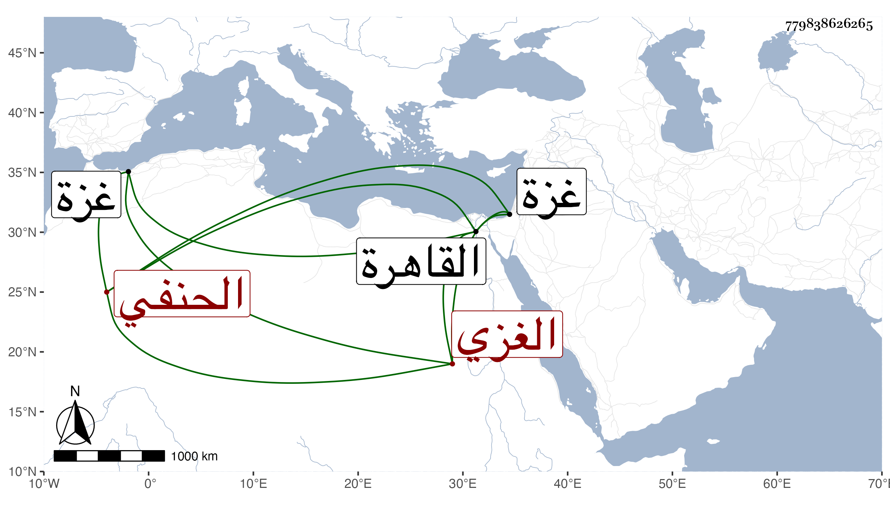

0902Sakhawi.DawLamic.ITO20230111-ara1.EIS1600.779838626265
Biography ID: 779838626265
459
محمد بن محمد بن عمر الغزي الحنفي وليس هو بالذي جده عمر بن إسرائيل الماضي . ممن حفظ المجمع واشتغل على أبيه والأياسي وتميز وولي قضاء غزة بعد الشمس الضبعي فدام أربع عشرة سنة ثم صرف بإبراهيم بن حرارة واستمر حتى مات في أواخر سنة أربع وتسعين عن بضع وستين ، وقد حج غير مرة وجاور ودخل القاهرة وكان ينتمي فيها ليشبك الفقيه ولم يكن فيما قيل به بأس ، له رزق من قبل أبيه وغيره يتقنع به .
